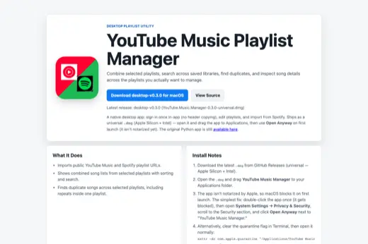
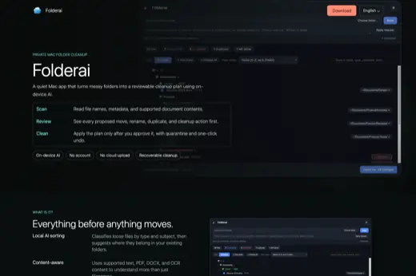
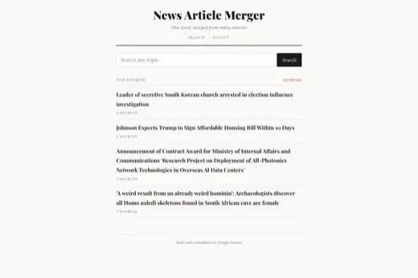
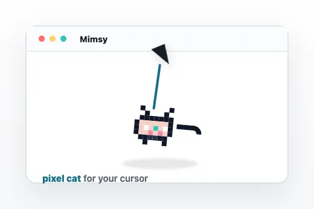

Desktop utility
YouTube Music Playlist Manager
Search saved playlists, find duplicate songs, track unavailable tracks, and clean up large music libraries.
Hi! I'm Rui. Here are a few apps I think are cool.

Desktop utility
Search saved playlists, find duplicate songs, track unavailable tracks, and clean up large music libraries.

Local-first app
A Downloads-folder cleaner that stages file moves and deletions for review, with optional help from a local Ollama model.

Web app
Pulls coverage from multiple outlets and merges it into one readable article with citations and perspective notes.

macOS app
A tiny desktop companion: a pixel cat that dangles from your cursor and sways as you move, like a keychain charm for your Mac.